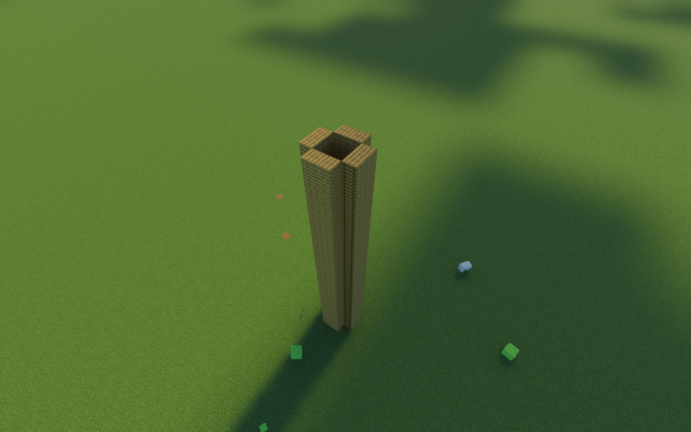
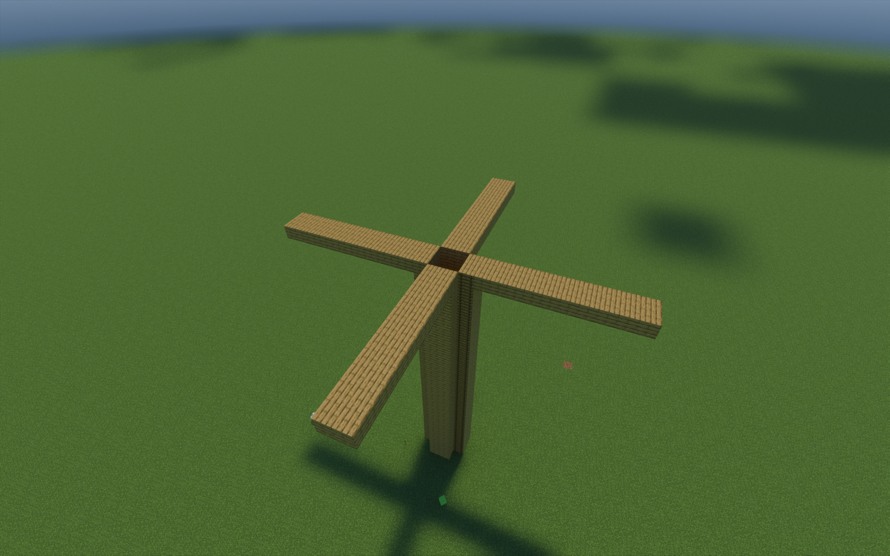
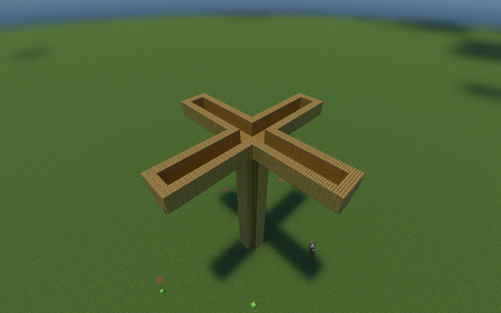
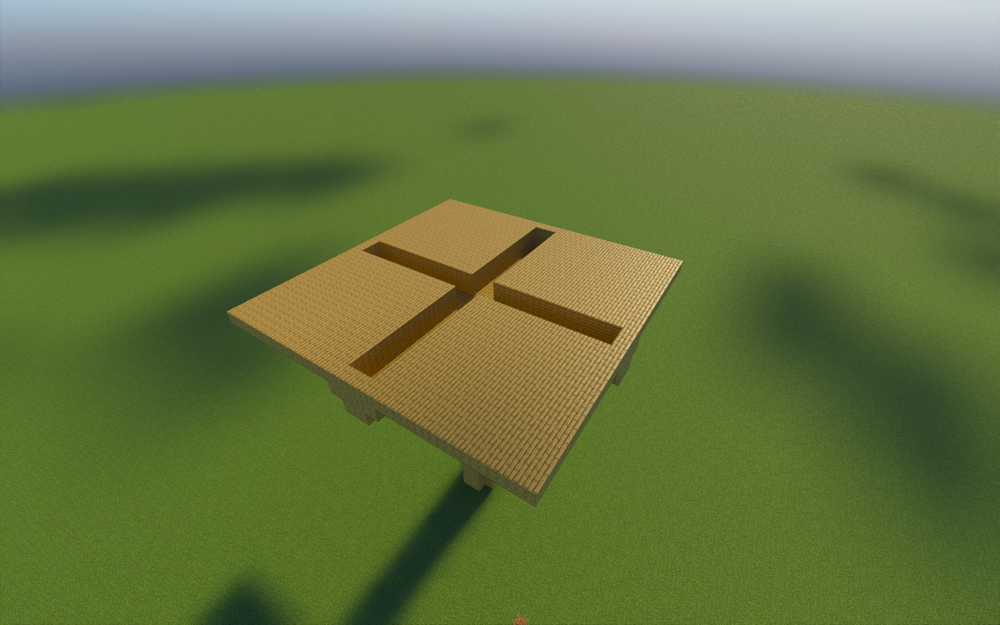
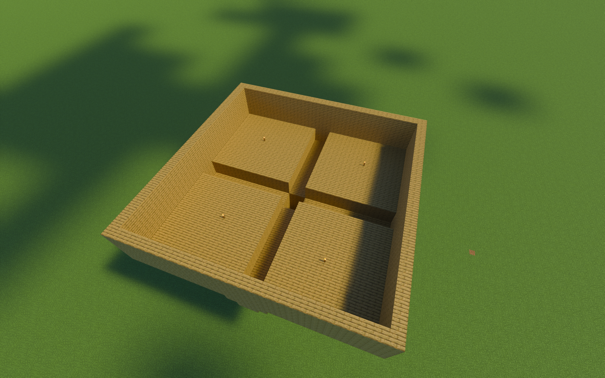
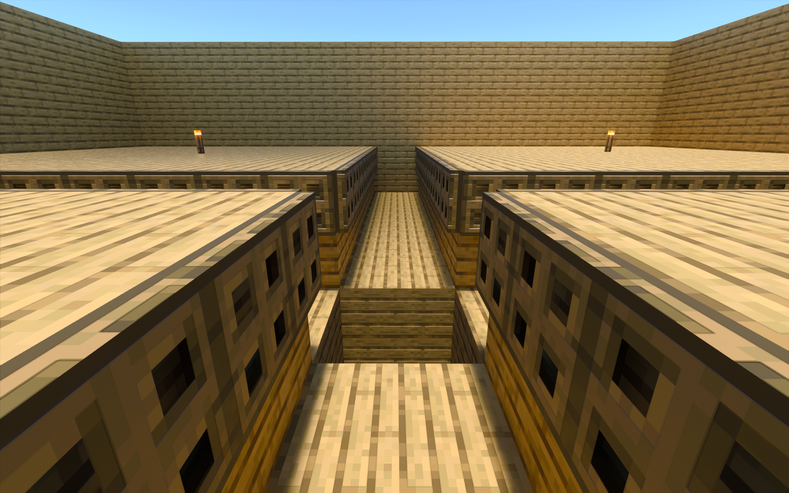
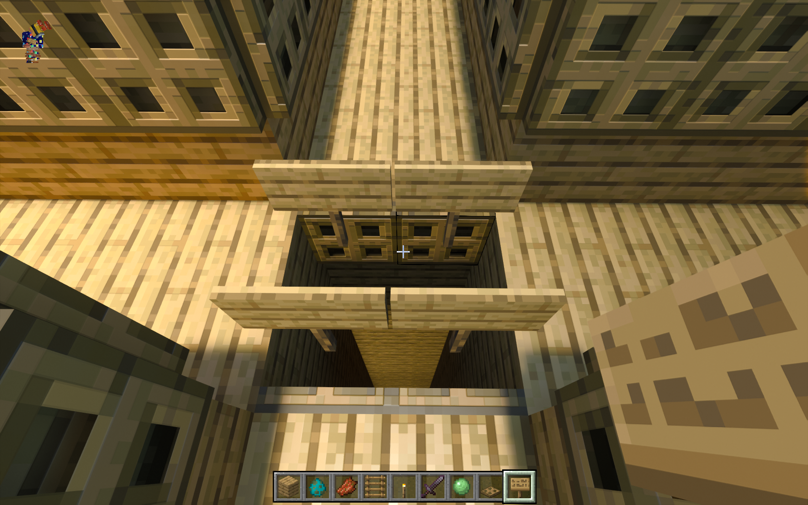
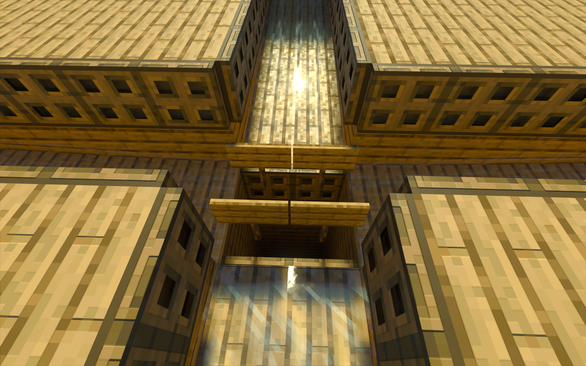
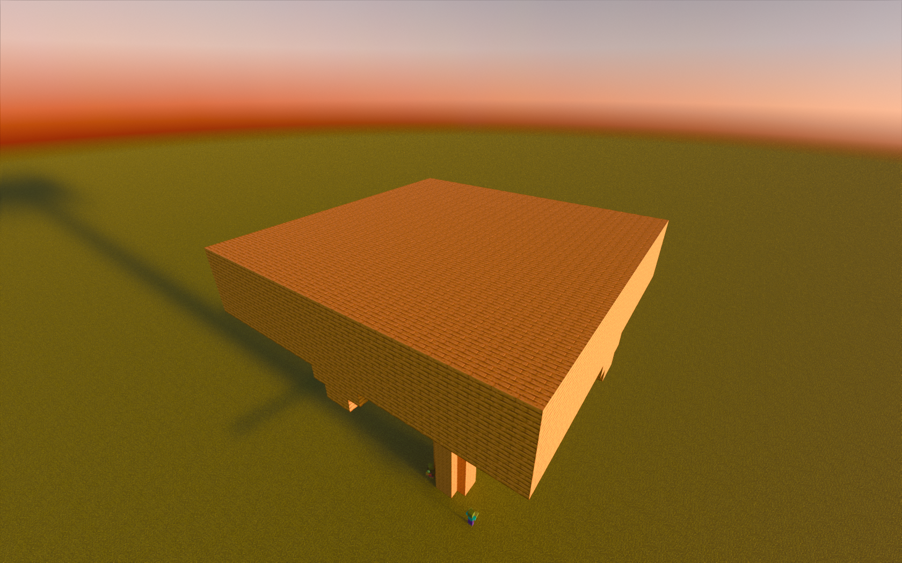
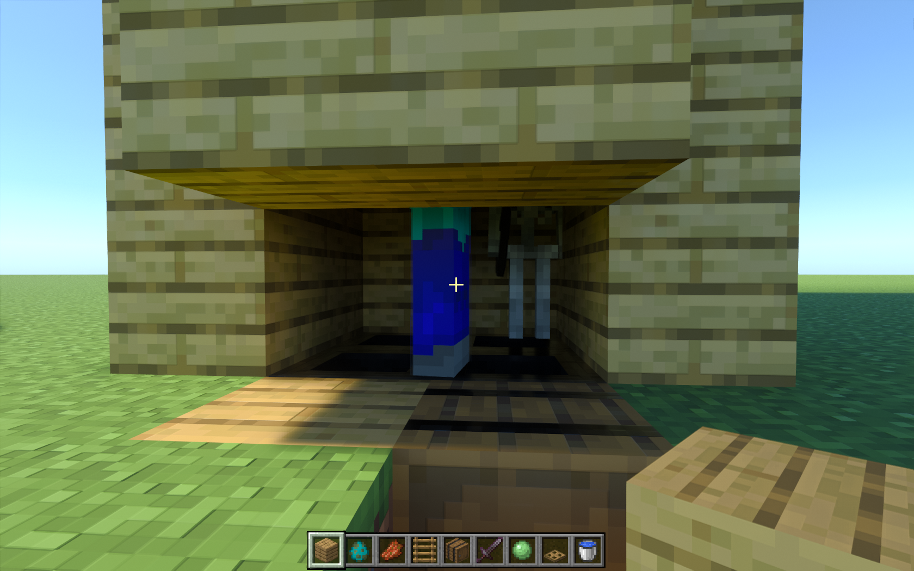

Here is how you can build a simple bedrock edition mob farm
build a tunel 23 blocks up, it should be 2x2 blocks on the inside. I recomend putting a ladder on the outside to help if you fall off the tower

^step 1
Next up build 7 blocks out in each direction from the top of the tunel.
^step 2
Afterwards, Build 2 block high walls around these strips of wood
^step 3
Step 4 is to build a 1-block thick platform of wood conecting the walls around the strips, the platform starts at the top block of the wall.
^step 4
Next you'll want to build 4 block high walls around the entire contraption
^step 5
You'll now want to make trap doors at the top block of the lower region.
^step 6
At the hole in the center of your farm place some trap doors, on top of these trap doors place some signs
^step 7
At the end of each lower area put some water, this will wash the mobs towards the hole
^step 8 (sorry if it's hard to see the water)
Now you've got to build a roof over the whole thing, make sure to use a full block. Not slabs
^step 9
Last but not least, place hoppers at the bottom of the funel feeding into a barrel, and make a window
where the mobs feet should be! Otherwise, Creepers will lock onto you and expode your farm!. 
^step 10
Thank you for reading my tutorial, if you want to find more of them click on the "more tutorials" button at the top of the page